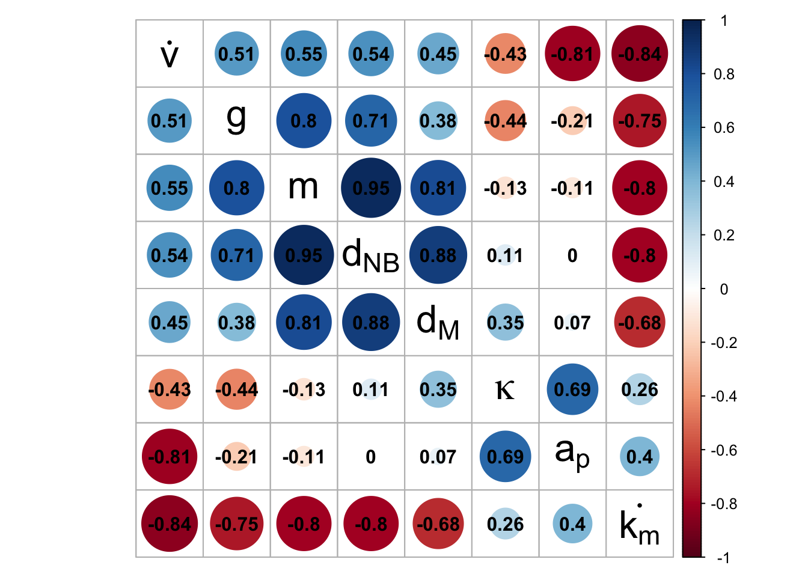
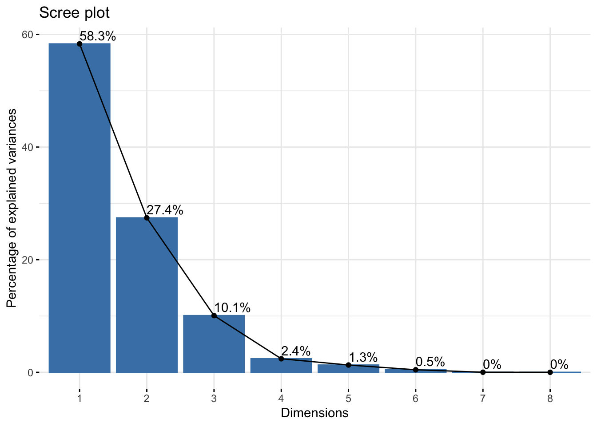

# plot of high seasonality movement pathsmph <- dfsteps %>%filter(movetype =="M") %>%filter(bseason =="HS") %>%ggplot() +geom_hline(yintercept =c(80, -80), color = pal_3[1], size =1, alpha =0.49) +geom_hline(yintercept =c(40, -40), color = pal_3[2], size =1, alpha =0.49) +geom_hline(yintercept =0, color = pal_3[3], size =1, alpha =0.49) +geom_path(aes(x = step, y = loc, group = ID), linewidth =1) +scale_alpha(guide ="none") +scale_linewidth(range =c(0.1,1.5), guide ='none') +scale_y_continuous("",breaks =seq(from =-100, to =100, by =20),position ="left") +theme_half_open() +theme(panel.background =element_blank(),panel.grid.major.y =element_line(color ="grey90"),strip.background =element_rect(fill ="grey90", color =NA),strip.text =element_text(face =2, size =12),axis.title.x =element_blank(),strip.switch.pad.wrap =unit(0.02, "npc"),strip.placement ="outside",strip.background.y =element_blank(),plot.title =element_text(face ="bold"), )# plot of mid seasonality movement pathsmpm <- dfsteps %>%filter(movetype =="M") %>%filter(bseason =="MS") %>%ggplot() +geom_hline(yintercept =c(80, -80), color = pal_3[1], size =1, alpha =0.49) +geom_hline(yintercept =c(40, -40), color = pal_3[2], size =1, alpha =0.49) +geom_hline(yintercept =0, color = pal_3[3], size =1, alpha =0.49) +#geom_path(aes(x = step, y = loc, group = ID, linewidth = dist)) +geom_path(aes(x = step, y = loc, group = ID), linewidth =1) +#geom_text(data = aorb, aes(x = x, y = y, label = label), size = 5, vjust = -0.5, fontface = 2) +#scale_color_viridis_d( direction = 1, end = 0.7, guide = "none") +scale_alpha(guide ="none") +scale_linewidth(range =c(0.1,1.5), guide ='none') +scale_y_continuous("",breaks =seq(from =-100, to =100, by =20), position ="left") +scale_x_continuous("Day") +theme_half_open() +theme(panel.background =element_blank(),panel.grid.major.y =element_line(color ="grey90"),strip.background =element_rect(fill ="grey90", color =NA),strip.text =element_text(face =2, size =12),axis.title.x =element_blank(),strip.switch.pad.wrap =unit(0.02, "npc"),strip.placement ="outside",strip.background.y =element_blank(),plot.title =element_text(face ="bold"), )# pull out stationary data to make curves with laternm <- dfsteps %>%group_by(migtype, step) %>%summarise(ss =mean(ss), es =mean(es), migtype = migtype, mdist = mdist, subtype = subtype, wseason = wseason, bseason = bseason, etype = etype, movetype = movetype) %>%ungroup() %>%distinct()# reorder and reformat group labels for plotselabels <-data.frame(migtype =c("NM_HS","SD_MS","MD_AS","LD_MS","LD_HS","NM_MS","SD_AS","MD_MS","NM_AS")) %>%mutate(migtype =factor(migtype,levels =c("NM_HS","SD_MS","MD_AS","LD_MS","LD_HS","NM_MS","SD_AS","MD_MS","NM_AS"))) %>%mutate(etype =case_match(migtype,c("LD_HS", "LD_MS", "MD_MS") ~"Buffer",c("MD_AS", "SD_MS", "SD_AS") ~"Mitigate",c("NM_AS", "NM_MS", "NM_HS") ~"Cope" )) %>%mutate(movecost =case_match(migtype,"LD_HS"~"Highest","LD_MS"~"High",c("MD_AS", "MD_MS") ~"Moderate",c("SD_MS", "SD_AS") ~"Low",c("NM_AS", "NM_MS", "NM_HS") ~"None" )) %>%mutate(bseason =case_match(migtype,c("NM_HS","SD_MS","MD_AS","LD_MS","LD_HS") ~"HS",c("NM_MS","SD_AS", "MD_MS") ~"MS",c("NM_AS") ~"AS", )) %>%mutate(bseason =factor(bseason, levels =c("HS","MS","AS"))) %>%mutate(elabel =paste0("ΔE: ", etype)) %>%mutate(mlabel =paste0("Movement cost: ", movecost)) %>%mutate(movetype =case_when( migtype =="LD_HS"~"M", migtype =="LD_MS"~"M", migtype =="MD_AS"~"M", migtype =="MD_MS"~"M", migtype =="SD_AS"~"M", migtype =="SD_MS"~"M", migtype =="NM_HS"~"NM", migtype =="NM_MS"~"NM", migtype =="NM_AS"~"NM" ))# function to build energy over time plots for each mig. strategyenergyplot <-function(group, sscol, escol, lw){ggplot(dfsteps %>%filter(migtype == group)) +geom_ribbon(aes(x = step, ymax = f, ymin =ifelse(f > ss, ss, f), group = ID),fill ="black", stat ="identity", position ="identity", alpha =0.25) +geom_path(data = nm %>%filter(migtype == group),aes(x = step, y = es), color = escol, linewidth =2, alpha =0.49) +geom_path(data = nm %>%filter(migtype == group),aes(x = step, y = ss), color = sscol, linewidth =2) +geom_path(aes(x = step, y = f, group = ID), linewidth = lw, color ="black") +geom_path(aes(x = step, y =mean(f), group = ID), linewidth =0.8, linetype ="dashed", color ="black") +geom_path(aes(x = step, y =mean(ss), group = ID), linewidth =0.8, linetype ="dashed", color = sscol) +geom_text(data = elabels %>%filter(migtype == group),aes(label = elabel),fontface ="bold", hjust =0, x =10, y =0.2, color ="black", size =4.5) +scale_y_continuous(breaks =seq(0.25, 1, length.out =4), position ="right",labels =seq(0.25, 1, length.out =4),limits =c(0,1.001),expand =expansion(add =c(0,0.05))) +scale_x_continuous(expand =expansion(add =c(0.05,0)), guide ="none") +theme_half_open() +theme(panel.grid =element_blank(),strip.text =element_blank(),legend.position ="none",panel.grid.major.y =element_line(color ="grey90"),axis.title.x =element_blank(),axis.title.y =element_blank(),panel.background =element_blank(),plot.title =element_text(face ="bold"),axis.title =element_text(size =12),plot.margin =margin(0,0,0,0) )}# group together high breeding seasonality plotshs <-Map(energyplot,group =list("SD_MS","MD_AS","LD_MS","LD_HS"),sscol = pal_3[1],escol =c(pal_3[2],pal_3[3],pal_3[2],pal_3[1]),lw =1)# group together mid breeding seasonality plotsms <-Map(energyplot,group =list("SD_AS","MD_MS"),sscol = pal_3[2],escol =c(pal_3[3],pal_3[2]),lw =1)#stationary energy plotsnmp <-Map(energyplot,group =list("NM_HS","NM_MS","NM_AS"),sscol = pal_3,escol =c(pal_3[3],pal_3[2],pal_3[1]),lw =1)# Make subplots grobs for more precise alignment using annotationsg1 <-as_grob(hs[[1]])g2 <-as_grob(hs[[2]])g3 <-as_grob(hs[[3]])g4 <-as_grob(hs[[4]])g5 <- dfsteps %>%filter(movetype =="M") %>%filter(bseason =="HS") %>%ggplot(aes(x = step, y = loc, group = ID)) +geom_path(aes(x = step, y = loc, group = ID), linewidth =1, color =NA) +ggtitle("") +scale_x_continuous() +scale_y_continuous(guide ="none") +theme_half_open() +theme(panel.background =element_blank(),strip.text =element_text(face =2, size =12),strip.switch.pad.wrap =unit(0.02, "npc"),strip.placement ="outside",strip.background.y =element_blank(),plot.title =element_text(face ="bold"),axis.title =element_blank() )g5 <-as_grob(g5)# Line up high seasonality grobs into a new plothsg <- dfsteps %>%filter(movetype =="M") %>%filter(bseason =="HS") %>%ggplot(aes(x = step, y = loc, group = ID)) +geom_path(aes(x = step, y = loc, group = ID), linewidth =1, color =NA) +annotation_custom(grob = g1,xmin =0, ymin =40, ymax =80) +annotation_custom(grob = g2,xmin =0, ymin =00, ymax =40) +annotation_custom(grob = g3,xmin =0, ymin =-40, ymax =00) +annotation_custom(grob = g4,xmin =0, ymin =-40, ymax =-80) +# annotation_custom(grob = g5, xmax = 365, ymax = -87) +ggtitle("Energy Available") +scale_x_continuous(guide ="none") +scale_y_continuous(guide ="none") +theme_half_open() +theme(panel.background =element_blank(),strip.text =element_text(face =2, size =12),strip.switch.pad.wrap =unit(0.02, "npc"),strip.placement ="outside",strip.background.y =element_blank(),plot.title =element_text(face ="bold"),axis.title =element_blank() )# mid seasonality grobsg1b <-as_grob(ms[[1]])g2b <-as_grob(ms[[2]])g3b <- dfsteps %>%filter(movetype =="M") %>%filter(bseason =="MS") %>%ggplot(aes(x = step, y = loc, group = ID)) +geom_path(aes(x = step, y = loc, group = ID), linewidth =1, color =NA) +ggtitle("") +scale_x_continuous() +scale_y_continuous(guide ="none") +theme_half_open() +theme(panel.background =element_blank(),strip.text =element_text(face =2, size =12),strip.switch.pad.wrap =unit(0.02, "npc"),strip.placement ="outside",strip.background.y =element_blank(),plot.title =element_text(face ="bold"),axis.title =element_blank() )g3b <-as_grob(g3b)# Line up mid seasonality grobs into a new plotmsg <- dfsteps %>%filter(movetype =="M") %>%filter(bseason =="HS") %>%ggplot(aes(x = step, y = loc, group = ID)) +geom_path(aes(x = step, y = loc, group = ID), linewidth =1, color =NA) +annotation_custom(grob = g1b,xmin =0, ymin =00, ymax =40) +annotation_custom(grob = g2b,xmin =0, ymin =-40, ymax =00) +annotation_custom(grob = g3b, xmax =365, ymax =-87) +scale_x_continuous(guide ="none") +scale_y_continuous(guide ="none") +theme_half_open() +theme(panel.background =element_blank(),strip.text =element_text(face =2, size =12),strip.switch.pad.wrap =unit(0.02, "npc"),strip.placement ="outside",strip.background.y =element_blank(),plot.title =element_text(face ="bold"),axis.title =element_blank() )# group up path and energy plots by breeding seasonalityhsgrid <-plot_grid( mph +ggtitle("Movement Path") +scale_x_continuous(guide ="none"), hsg,ncol =2, align ="hv", rel_widths =c(0.5,0.5))msgrid <-plot_grid( mpm, msg,ncol =2, align ="hv", rel_widths =c(0.5,0.5))# add both sets of plots to wholemeplot <-plot_grid(hsgrid, msgrid, nrow =2, align ="hv")meplot
PCA Analyses
Code
pcatraits <-c("kappa","v","km","g","m","mig_time","nb_length","t_mat")# Data reformat for PCApcadata <- dftop %>% dplyr::select(all_of(pcatraits))#correlation matrixcmat <-cor(scale(pcadata))colnames(cmat) <-c("$kappa","$dot(v)","$dot(k[m])","g","m","$d[M]","$d[NB]","$a[p]")rownames(cmat) <-c("$kappa","$dot(v)","$dot(k[m])","g","m","$d[M]","$d[NB]","$a[p]")# Visualise correlation matrixcorrplot(cmat, order ="AOE", addCoef.col ='black', diag =FALSE, tl.pos ='d', tl.col ="black", tl.cex =2)

Code
# run correlation PCApca <-prcomp(pcadata, scale. =TRUE, center = T)# get PCA values and reformat for labels/plottingvar <-get_pca_var(pca)ind <-get_pca_ind(pca)# Scree plotfviz_screeplot(pca, addlabels = T)

Code
# reference line corresponds to the expected value if the contributions where uniform across variables.pca %>% broom::tidy(matrix ="eigenvalues") %>% knitr::kable(caption ="Explained variance", digits =2)
Explained variance
PC
std.dev
percent
cumulative
1
2.16
0.58
0.58
2
1.48
0.27
0.86
3
0.90
0.10
0.96
4
0.44
0.02
0.98
5
0.32
0.01
1.00
6
0.19
0.00
1.00
7
0.03
0.00
1.00
8
0.02
0.00
1.00
Code
# Variable contributions for axes 1,2,3pca1c <-fviz_contrib(pca, choice="var", axes =1, top =10 ) +labs(title ="PC1")pca2c <-fviz_contrib(pca, choice="var", axes =2, top =10 ) +labs(title ="PC2")pca3c <-fviz_contrib(pca, choice="var", axes =3, top =10 ) +labs(title ="PC3")# plot variable contributions for all 3 axespca1c +pca2c + pca3c
Code
# get PC1,2,& 3 values for each variable for later plottingvarlist <-lapply(1:length(var), FUN =function(x)pivot_longer(as.data.frame(var[[x]][,1:3]) %>%rownames_to_column(var ="var"), cols =starts_with("Dim"), names_to ="PC", values_to =names(var)[x]))# condense variable dataframevdata_l <- varlist[[1]]for(i in2:length(varlist)){ vdata_l <-full_join(vdata_l, varlist[[i]], by =join_by(PC, var))}# rename Dim. to PCvdata_l <- vdata_l %>%mutate(PC =gsub("Dim.", "PC", PC))# get PC1,2,& 3 values for each individual/observationindlist <-lapply(1:length(ind), FUN =function(x)pivot_longer(as.data.frame(ind[[x]][,1:3]) %>%rownames_to_column(var ="ID"), cols =starts_with("Dim"), names_to ="PC", values_to =names(var)[x]))# condenseidata_l <- indlist[[1]]for(i in2:length(indlist)){ idata_l <-full_join(idata_l, indlist[[i]], by =join_by(PC, ID))}# rename Dim to PCidata_l <- idata_l %>%mutate(PC =gsub("Dim.", "PC", PC))# create wide var dataframe w/labelsvdata <-data.frame(x1 = var$coord[,1],x2 = var$coord[,2],x3 = var$coord[,3],x1c = var$contrib[,1],x2c = var$contrib[,2],x3c = var$contrib[,3],var =rownames(var$coord)) %>%mutate(label =recode(var,"v"="dot(v)","t_mat"="a[p]","mig_time"="d[M]","nb_length"="d[NB]","km"="dot(k)[m]",.default = var ))# create long var dataframe w/labelsvdata_l <- vdata_l %>%group_by(PC) %>%mutate(alpha =scale(contrib)) %>%ungroup() %>%mutate(label =recode(var,"v"="dot(v)","t_mat"="a[p]","mig_time"="d[M]","nb_length"="d[NB]","km"="dot(k)[m]",.default = var ))# create dataframe of individual coordinates for all 3 axesidata <-data.frame(x = ind$coord[,1],x2 = ind$coord[,2],x3 = ind$coord[,3],id =rownames(ind$coord))# function to calculate angle for label placement on plotlabelangle <-function(x,y){ x <-paste0("x",x) y <-paste0("x",y) (180/pi) *atan(vdata[,y]/vdata[,x])}# function to calculate hjust for label placement on plotlabelhjust <-function(x){ x <-paste0("x",x) (1-1.2*sign(vdata[,x]))/2}# Vector loading plots for pair-wise combinations of axes# PC 1&2pcavc_12 <-fviz_pca_var(pca,axes = (c(1,2)),alpha.var="contrib",title ="PC1, PC2",arrowsize =1,circlesize =1,label ="", ) +geom_text_repel(data = vdata, aes(x = x1 *1.05, y = x2*1.05, label = label),hjust =labelhjust(1),size =3,parse = T,force =0.001 ) +scale_x_continuous(expand =expansion(mult =0.1)) +scale_y_continuous(expand =expansion(mult =0.1))# PC 1&3pcavc_13 <-fviz_pca_var(pca,axes = (c(1,3)),alpha.var="contrib",#gradient.cols = c("#00AFBB", "#E7B800", "#FC4E07"),title ="PC1, PC3",arrowsize =1, circlesize =1, label ="") +geom_text_repel(data = vdata, aes(x = x1 *1.05, y = x3*1.05, label = label),hjust =labelhjust(1),size =3,parse = T,force =0.001 ) +scale_x_continuous(expand =expansion(mult =0.2)) +scale_y_continuous(expand =expansion(mult =0.2))# PC 2&3pcavc_23 <-fviz_pca_var(pca,axes = (c(2,3)),alpha.var="contrib",title ="PC2, PC3",arrowsize =1, circlesize =1, label ="") +geom_text_repel(data = vdata, aes(x = x2 *1.05, y = x3*1.05, label = label),hjust =labelhjust(2),size =3,parse = T,force =0.001 ) +scale_x_continuous(expand =expansion(mult =0.2)) +scale_y_continuous(expand =expansion(mult =0.2))# combine them allpcavc_12 + pcavc_13 + pcavc_23 &theme(legend.position ="bottom", aspect.ratio =1)
# Annotate data frame for plotting individual data points on PCA Bi-plotsgroups <-c("bseason","mdist","wseason","etype","dist")pcaplus <- dftop %>%select(all_of(groups)) %>%bind_cols(., idata)
# get params for high seasonality breeders and clean up to run in IBMpopdata_HS <- dftop %>%filter(bseason =="HS") %>%mutate(m =0, mig_time =0, nb_length =0) %>% dplyr::select(all_of(c(modelparams$e_traits, modelparams$m_traits, "migtype", "movetype", "eb", "ID", "etype","dist")))# reset population size to match input datamodelparams$popsize <-nrow(popdata_HS)# run optimized values in IBM and label as a fixed run for plottingtHSresults <-GAEMMfixedparams(popdata_HS, modelparams) %>%filter(alive) %>%mutate(run ="fixed")# get params for mid seasonality breeders and clean up to run in IBMpopdata_MS <- dftop %>%filter(bseason =="MS") %>%mutate(m =0, mig_time =0, nb_length =0) %>% dplyr::select(all_of(c(modelparams$e_traits, modelparams$m_traits, "mig_speed", "migtype", "movetype","eb","ID", "etype", "dist")))# reset population size (# of indv) and locations to matchmodelparams$startloc <-40modelparams$endloc <-40modelparams$popsize <-nrow(popdata_MS)# run optimized values in IBM with no movement and label as a fixed run for plottingtMSresults <-GAEMMfixedparams(popdata_MS, modelparams) %>%filter(alive) %>%mutate(run ="fixed")# create and new data frame with results from fixed position run and with movement alloweddata_t <- dftop %>%#filter(migtype == "NM_MS" | migtype == "NM_HS") %>%mutate(run ="ga") %>% dplyr::select(all_of(names(tHSresults))) %>%bind_rows(tHSresults, tMSresults) %>%mutate(bseason =case_when( startloc ==80~"HS", startloc ==40~"MS", startloc ==0~"AS" )) %>%mutate(mdist =case_when( migtype =="LD_HS"~"LD", migtype =="LD_MS"~"LD", migtype =="MD_AS"~"MD", migtype =="MD_MS"~"MD", migtype =="SD_AS"~"SD", migtype =="SD_MS"~"SD", migtype =="NM_HS"~"NM", migtype =="NM_MS"~"NM", migtype =="NM_AS"~"NM" )) %>%mutate(mdist =factor(mdist,levels =c("NM","LD","MD","SD"))) %>%mutate(fscaled =scale(fitness, center = F),run =factor(run, levels =c("ga","fixed")))# stationary data for comparisonnmfitness <- data_t %>%filter(movetype =="NM"& run =="fixed") %>%group_by(bseason) %>%slice_max(fitness, n =1, with_ties = F) %>%ungroup() %>%#mutate(fscaled = 0) %>%mutate(dist =factor(dist), bs ="Breeding Seasonality")# set up color palette and shapes for plotpcacol <-c("NM_HS"= pal_3[1],"NM_MS"= pal_3[2],"NM_AS"= pal_3[3],"SD_MS"="grey60","SD_AS"="grey60","MD_AS"="grey30","MD_MS"="grey30","LD_HS"="black","LD_MS"="black")pcashape <-c("NM_HS"=15,"NM_MS"=15,"NM_AS"=15,"SD_MS"=16,"SD_AS"=17,"MD_AS"=16,"MD_MS"=17,"LD_HS"=16,"LD_MS"=17)# set up to color panel labelstexts <-list(NULL, element_text(colour = pal_3[1]), element_text(colour = pal_3[2]))strip <-strip_nested(text_x = texts)# plot results - Figure 4p <- data_t %>%mutate(dist =factor(dist/2), bs ="Breeding Seasonality") %>%mutate(bseason =factor(bseason, levels =c("HS","MS"))) %>%filter(movetype =="M") %>%ggplot(aes(x = run, y = fscaled)) +geom_hline(data = nmfitness[1,], aes(yintercept = fscaled), color = pal_3[1], size =2) +geom_hline(data = nmfitness[2,], aes(yintercept = fscaled), color = pal_3[2], size =2) +geom_line(aes(color = dist, linetype = etype, group = ID), size =1) +geom_point(size =3, aes(color = dist)) +scale_y_continuous(name ="Scaled Fecundity") +scale_x_discrete(expand =c(0.1,0.1), labels =c("ga"="Migrate", "fixed"="Remain"), guide ="axis_nested", position ="bottom") +facet_nested(~bs + bseason, labeller =labeller(bseason =c("HS"="High", "MS"="Mid")),nest_line =element_line(color ="black"), strip = strip, drop = T) +scale_color_grey(end =0, start =0.7, name ="Migration\nDistance", guide =guide_legend(reverse = T)) +scale_linetype(name ="Energy\nStrategy") +xlab("") +theme_bw() +theme(panel.border =element_blank(),strip.background =element_blank(),plot.title =element_text(hjust =0.5, face ="bold"),strip.text =element_text(hjust =0.5, face ="bold", size =14),axis.text.x =element_text(hjust =0.5, face ="bold", size =12),strip.placement ="outside",legend.position ="right")p